IN-CON-TOUR-NABLES
Synthèse des réponses du CS et typologie des revues
20/05/2026
Requête originelle
Quelles sont les 2 ou 3 revues scientifiques incontournables dans votre discipline (indépendemment de l’impact factor) ?
En dehors de l’intérêt scientifique des contenus, avez-vous des revues que vous appréciez particulièrement au niveau du confort de lecture, des fonctionnalités proposées autour des textes mêmes des articles ?
Synthèse
Revues citées
| Discipline | GS | Revues | Editeur et URL |
|---|---|---|---|
| Biochimie | Biosphera | Nature medicine | Springer Nature |
| Biochimie | Biosphera | Proceedings of the national academy of sciences | PNAS |
| Biochimie | Biosphera | Arteriosclerosis thrombosis and vacular biology | atvb |
| Biochimie | Biosphera | Journal of lipid research | jlr.org ou chez Elsevier |
| Développement logiciel | ISN + SIS | Elemental Microscopy | Site web créé via le CMS Curvenote |
| Développement logiciel | ISN + SIS | Journal of Digital History | Site web en co-éd. De Gruyter + University of Luxembourg |
| Développement logiciel | ISN + SIS | MetaROR (MetaResearch Open Review) | Sous Wordpress -> modèle Publish-Review-Curate |
| Economie | Géosciences | The Review of Economic Studies | OUP |
| Economie | Géosciences | Journal of Political Economy | UChicago |
| Economie | Géosciences | Ecological Economics | Elsevier |
| Economie | Géosciences | She Ji:The Journal of Design, Economics, and Innovation | Elsevier |
| Economie | Géosciences | World Development | Elsevier |
| Economie | Géosciences | Revue économique | CAIRN ou JSTOR en PDF |
| Economie | Géosciences | Global Africa | Sous Wordpress |
| Ethique et épistémologie | Divers | Science and Engineering Ethics | Springer |
| Ethique et épistémologie | Divers | Ethics | UChicago |
| Ethique et épistémologie | Divers | Revue d’anthropologie des connaissances | OpenEdition |
| Ethique et épistémologie | Divers | Journal international de bioéthique et d’éthique des sciences | CAIRN |
| Histoire | HSP | Past & Present | OUP |
| Histoire | HSP | Quaderni storici | Riviste web |
| Histoire | HSP | Annales Histoire Sciences sociales | CAIRN ou CUP (bilingue) |
| Physique | Physique | Physical Review Letters | APS Journals |
| Physique | Physique | Nature Physics | Nature |
| Physique | Physique | Journal of Plasma Physics | CUP |
| Physique | Physique | Proceedings of the Royal Society B (Biological sciences) | Royal Society |
| Sciences politiques | S&SP | Politix | CAIRN |
| Sciences politiques | S&SP | Revue française de science politique | CAIRN |
| Sociologie | S&SP | Revue française de sociologie | CAIRN |
| Sociologie | S&SP | Sociétés contemporaines | CAIRN |
| Sociologie | S&SP | Actes de la recherche en sciences sociales | CAIRN |
| Sociologie | S&SP | Genèses | CAIRN |
| SIC | HSP + éducation | Culture & Musées | OpenEdition |
| SIC | HSP | Communication & langages | CAIRN |
| SIC | HSP | La Lettre de l’OCIM | OpenEdition |
Verbatims
J’apprécie particulièrement la Revue d’anthropologie des connaissances pour :
- la clarté générale du site ;
- la richesse du sommaire : double index (dont foison de mots-clés), appels à contribution (en cours ET clos), précision des informations sur la revue (projet éditorial, comités, informations aux auteurs dont délai moyen entre soumission et publication ET aux relecteurs indiquant les critères d’évaluation des articles), recensions d’ouvrages ;
- le confort de lecture des articles (plan détaillé, sous titres en couleur);
- la politique de publication (libre accès).
L’ensemble des revues de Physique de Cambridge University Press comme Journal of Plasma Physics ainsi que les Proceedings of the Royal Society sont reconnus par nombre de physiciens comme présentant la typographie et le format le plus agréable à la lecture et une qualité des fonctionnalités de citations et références supérieure à bien des revues.
Les revues en économie ont un format assez classique…une revue avec un format plus original : She Ji: The Journal of Design, Economics, and Innovation
[Le] format de lecture en ligne de Cambridge University Press est agréable. Je préfère cependant le format de Cairn, qui permet d’afficher les notes de bas de page sur le côté.
Ce n’est pas une revue mais un dictionnaire encyclopédique en ligne, je vous le partage car je trouve très pratique la façon dont il est organisé, et il fait également référence : https://publictionnaire.huma-num.fr/
Une revue que j’apprécie particulièrement est Global Africa. Il s’agit d’une revue récente qui vise à promouvoir la recherche africaine, en partenariat avec des institutions comme l’IRD. Elle propose notamment des publications multilingues (anglais, français, swahili, wolof, par exemple), ce qui constitue une initiative très intéressante pour élargir l’accès aux savoirs et aux communautés scientifiques, dans des contextes marqués par de fortes disparités d’accès à ces savoirs.
Je suis un grand lecteur de pdf et ne lis jamais les articles sur les sites néanmoins la lecture est tout à fait faisable / fonctionnel sur la plupart des sites comme Nature / PNAS ou encore Science.
Concernant les enjeux de lecture, pour moi la revue la plus agréable à lire en version papier est Actes de la recherche en sciences sociales, avec une iconographie très riche et un très grand confort de lecture. Pour le reste, la lecture des versions électronique se vaut pour les revues, à l’exception du fait qu’il y a deux plateformes électroniques : Cairn et Openedition. Pour ma part, je préfère largement Openedition, que je trouve beaucoup plus maniable que Cairn.
FOCUS
- Grands éditeurs et diffuseurs
Springer - Nature
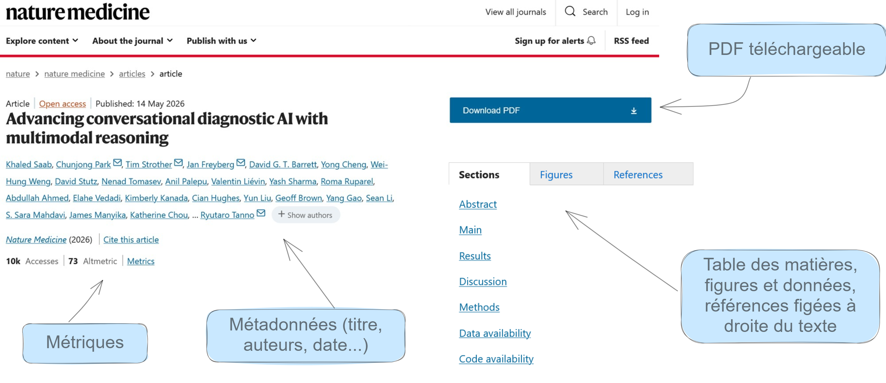
Corps du texte
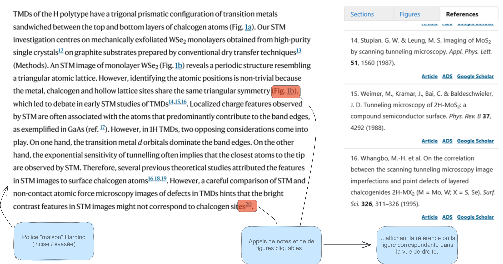
Images, figures
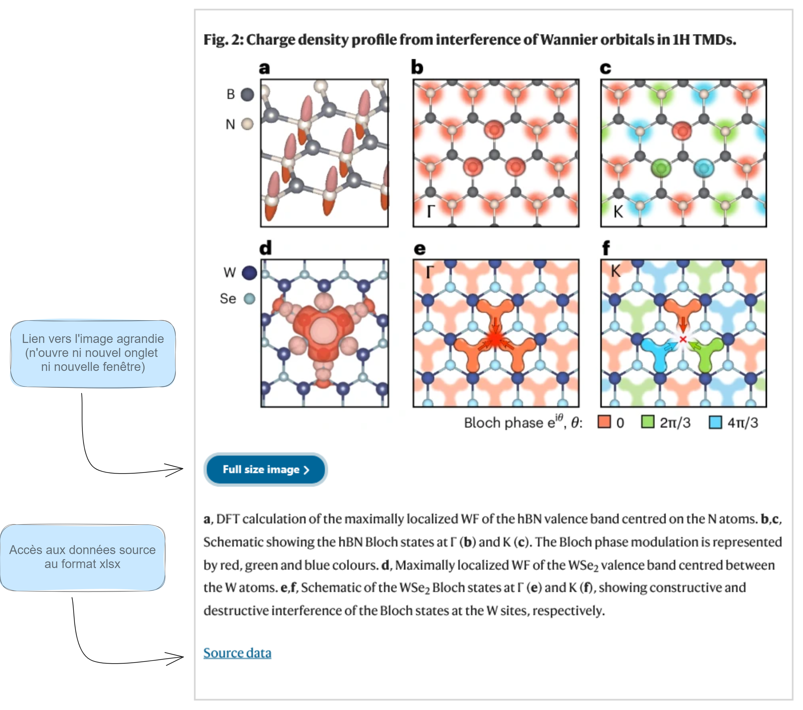
Elsevier - Science Direct
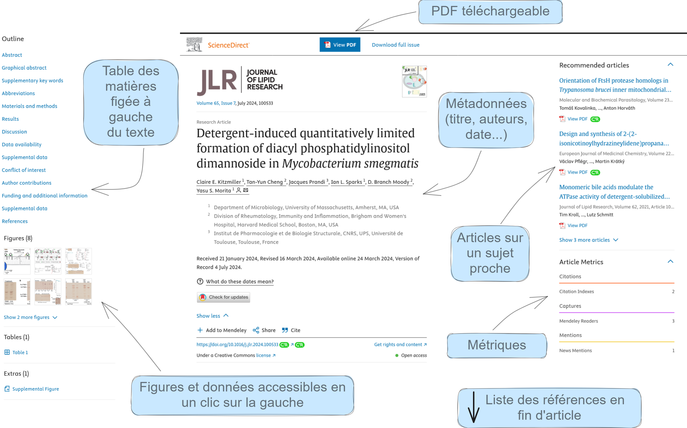
Autre version de la landing page
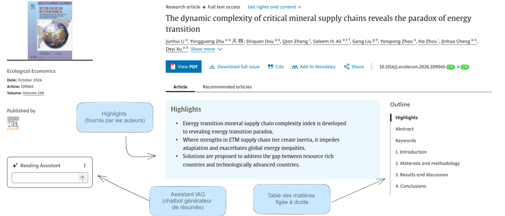
Corps du texte
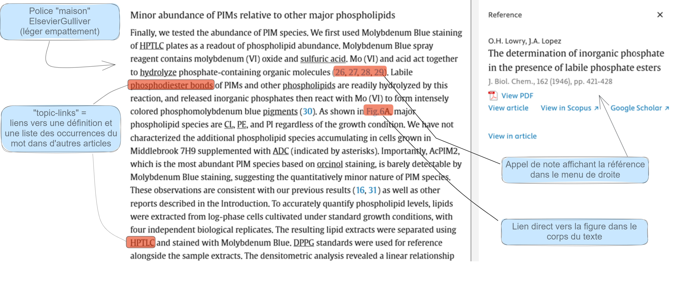
Images, figures
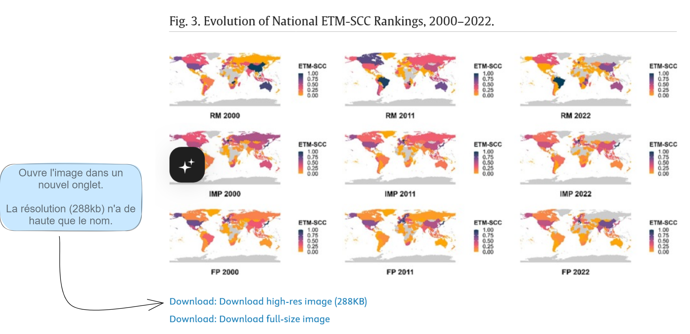
CAIRN
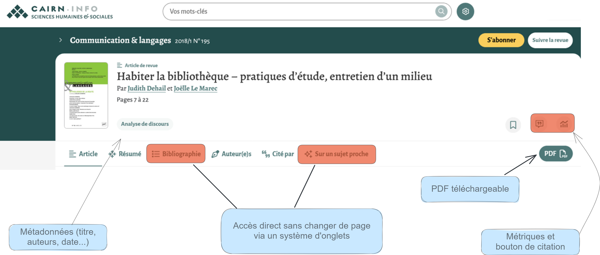
Corps du texte
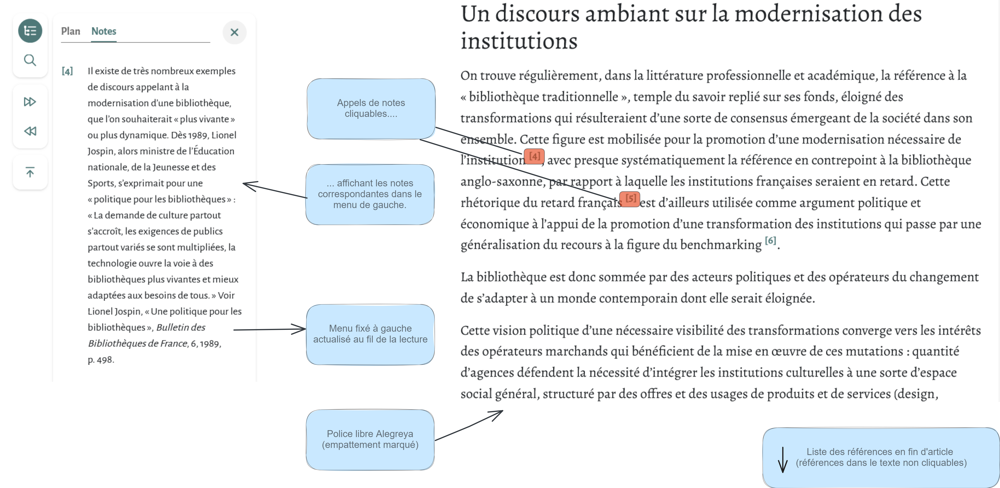
Images, figures

OpenEdition
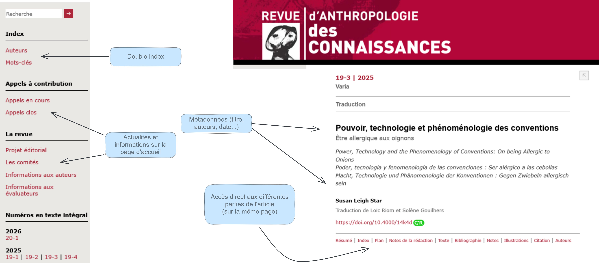
Corps du texte
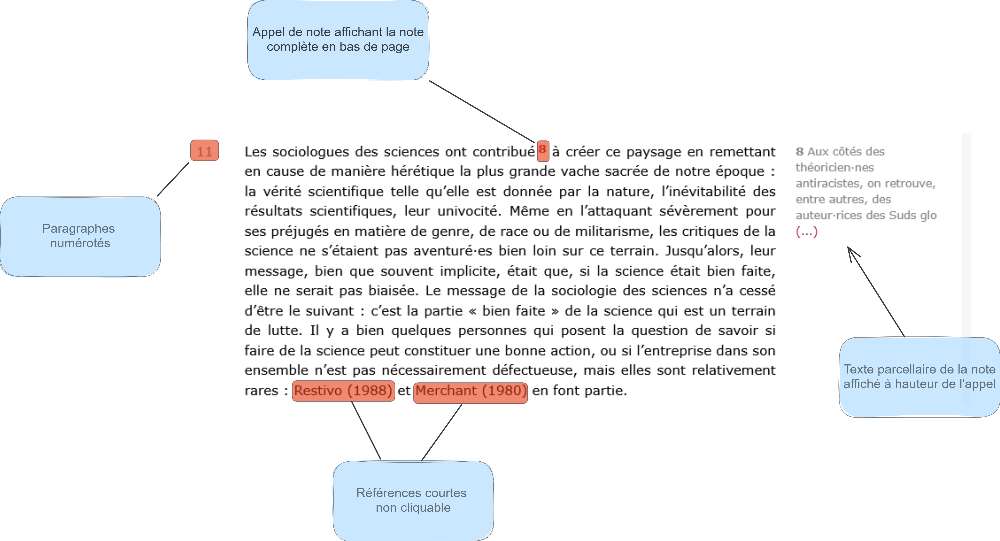
Images, figures
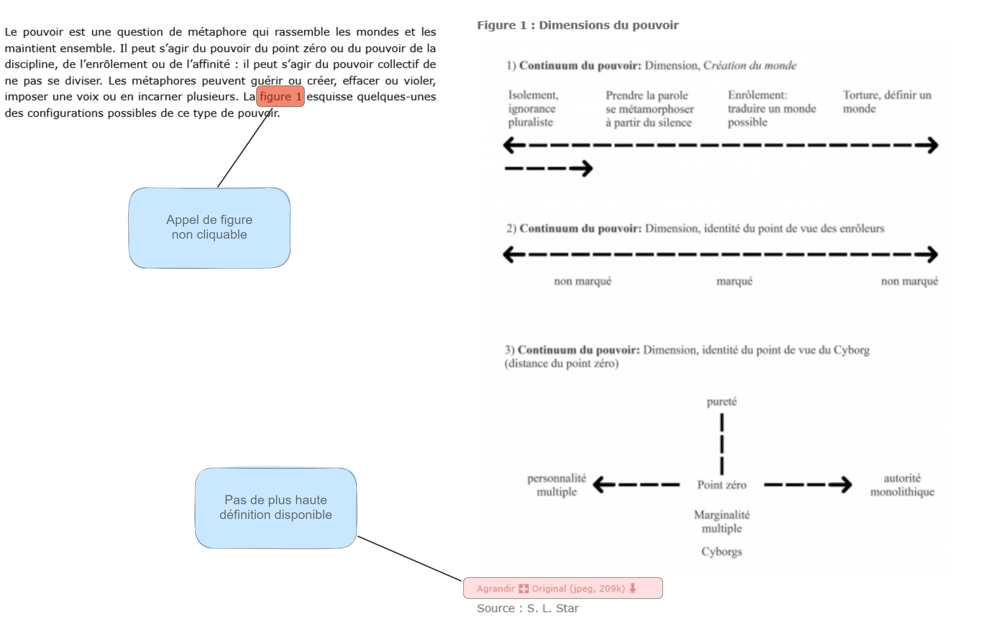
FOCUS
- Editeurs de taille moyenne
FOCUS
- Indépendants
Journal of Digital History (source)
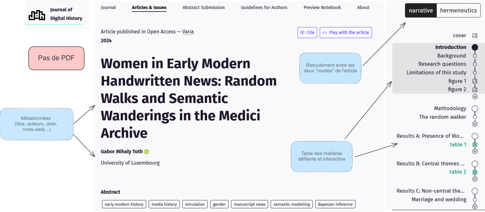
Corps du texte
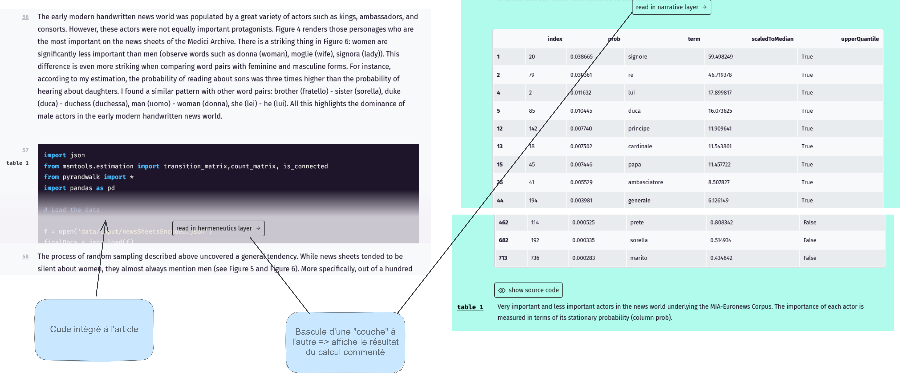
Suppléments
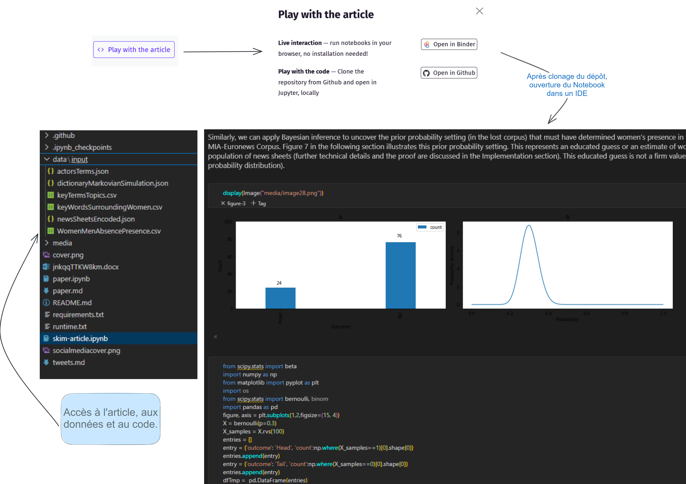